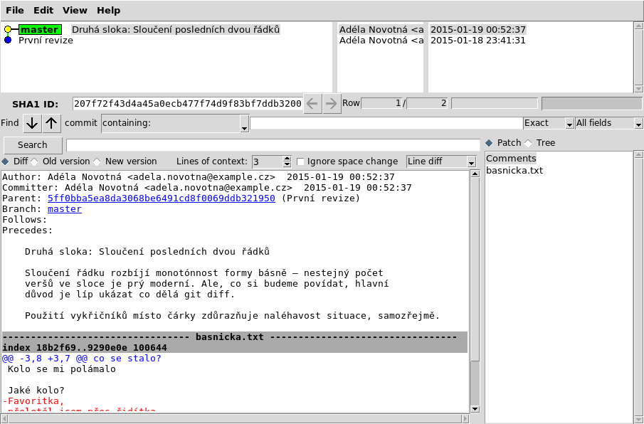
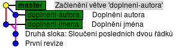

PyLadies Brno
Git
Ať už programuješ nebo píšeš dokumenty, stává se,
že vytvoříš několik verzí.
Tuhle chceš archivovat část, která už není potřeba,
tamhle chceš svoji práci poslat k ohodnocení,
nebo dokonce kolegům kteří na ni spolupracují.
A když se verze začnou kupit, může být problém se v
nich vyznat.
Tento problém řeší nástroje na správu verzí
(angl. version control system. VCS).
Asi nejpopulárnější z nich je Git, se kterým
se teď seznámíme.
Instalace
Git je program, který je potřeba nainstalovat
a nastavit.
To se liší pro různé operační systémy:
Linux
Instalace na Linux zvládneme dvěma příkazy, ale já se tu trochu rozepíšu, aby to nebylo tak nudné...
Fedora, RHEL:
$ sudo yum install git gitk git-gui nano
Ubuntu, Debian:
$ sudo apt-get install git gitk git-gui nano
Proč tak složitě?
Git se často používá na serverech, které se ovládají jen příkazovou řádkou – neumí kreslit na obrazovku okýnka (pokud vůbec nějakou obrazovku mají). Programy
No a
Git se často používá na serverech, které se ovládají jen příkazovou řádkou – neumí kreslit na obrazovku okýnka (pokud vůbec nějakou obrazovku mají). Programy
gitk a git gui,
které jsou „grafické“, je proto potřeba nainstalovat
zvlášť.
No a
nano je jednoduchý textový editor,
který funguje v příkazové řádce.
Git standardně používá vim, který je ovšem
trochu složitější na naučení.
Po instalaci nastavíme Nano jako editor (případně
místo toho jeden z nich):
$ git config --global core.editor nano
Pokud už umíš pracovat s editorem
vim nebo
emacs, zadej ho v nastavovacím příkazu
místo nano.
Jestli máš ještě čas, zkus si pohrát s novým editorem:
$ nano mujsoubor.txtText se píše jako v „normálním“ editoru. Pomocí
Ctrl+O se soubor uloží;
Ctrl+X ukončí editor.
Kdybys zkratky zapoměla, dole má Nano malou nápovědu.
Windows
Jdi na stránku
git-scm.org, stáhni si
Git, a nainstaluj si ho.
Budeš chtít tohle nastavení:
- Run Git from the Windows Command Prompt
- Checkout Windows-style, commit Unix-style line endings
Pak jdi na stránku programu
GitPad,
a nainstaluj i ten.
Nastavení
Na projektu, který bude uložen v Gitu, může
spolupracovat více lidí.
Ke každé verzi se připojuje jméno autorky,
aby potom šlo dohledat kdo ji má na svědomí.
Proto je Gitu potřeba říct jméno a e-mail:
$ git config --global user.name "Adéla Novotná" $ git config --global user.email adela.novotna@example.czMůžeš samozřejmě použít i přezdívku, nebo dokonce falešný mail, ale v takovém případě budeš mít problémy, až se někdy zapojíš do týmového projektu.
Pokud se bojíš spamu, neboj: nezačneš ho dostávat víc
než při normálním používání e-mailu.
Adresa se zobrazí jen lidem, kteří si stáhnou projekt,
do kterého jsi přispívala.
Spammeři se většinou zaměřují na méně technicky zdatné
lidi, než uživatele Gitu.
Dále si můžeš nastavit barvičky – pokud si tedy
(jako někteří autoři Gitu) nemyslíš, že příkazová
řádka má být černobílá:
$ git config --global color.ui true
A to je vše! Git je nainstalovaný,
pojďme ho začít používat!
Repozitář
Každý projekt, který budeme verzovat, musí mít pro sebe
vyhrazený adresář.
Vytvoř si tedy nový adresář a přepni se do něj (pomocí
V našem repozitáři zatím nic není. Zkus to ověřit příkazem
cd).
Pak vytvoř gitový repozitář (angl. repository):
$ git init Initialized empty Git repository in /tmp/tepo/.git/Na první pohled to vypadá že se nic nestalo: tenhle příkaz vytvořil skrytý adresář
.git, do kterého uložil nějaké informace.
Přesvědč se přazem ls -a (Linux) nebo
dir /a (Windows).
Adresáře .git je schovaný proto, že
ho spravuje Git. My v něm nebudeme nic měnit.
V našem repozitáři zatím nic není. Zkus to ověřit příkazem
git status, který
vypisuje informace o stavu repozitáře:
$ git status On branch master Initial commit nothing to commit (create/copy files and use "git add" to track)
První revize
Vytvoř soubor
Znovu zkus vypsat stav repozitáře:
basnicka.txt a napiš do něj
nějakou básničku.
Měla by mít aspoň pět řádků, ať pak máme s čím pracovat.
Pak zkus znovu git status: Git oznámí,
že v adresáři je soubor, o kterém ještě „neví“.
$ git status
On branch master
Initial commit
Untracked files:
(use "git add <file>..." to include in what will be committed)
basnicka.txt
nothing added to commit but untracked files present (use "git add" to track)
U každého nového souboru musíme Gitu říct, že
chceme jeho obsah sledovat.
Proveď to se svojí básničkou:
$ git add basnicka.txta znovu zkontroluj stav repozitáře:
$ git status On branch master Initial commit Changes to be committed: (use "git rm --cachedTo, co je zelené („changes to be committed“), se přidá do další revize (angl. commit, kterou vytvoříš. Pojď tedy vytvořit revizi:..." to unstage) new file: basnicka.txt
$ git commitPo zadání tohoto příkazu se otevře editor, do kterého musíš napsat nějaký popisek, abys věděla, co tahle revize obsahuje za změny. Pro začátek napiš jen
První revize.
Předvyplněné řádky začínající # nech být
(nebo vymaž, podle chuti – Git je ignoruje).
Pak soubor ulož, a zavři editor.
Znovu zkus vypsat stav repozitáře:
$ git status On branch master nothing to commit, working directory cleanTenhle krátký výstup znamená: Od poslední revize (kterou jsi právě vytvořila) se nic nezměnilo.
A co všechno je v téhle první/poslední revizi?
To ti poví příkaz
git show:
$ git show commit e0419fedda0a85a945a05a31bd58c5196c8d3b1d Author: Adéla Novotná <adela.novotna@example.cz> Date: Sun Jan 18 23:41:31 2015 +0100 První revize diff --git a/basnicka.txt b/basnicka.txt new file mode 100644 index 0000000..8416aea --- /dev/null +++ b/basnicka.txt @@ -0,0 +1,11 @@ +Haló haló +co se stalo? +Kolo se mi polámalo + +Jaké kolo? +Favoritka, +přeletěl jsem přes řidítka + +Co jste dělal? +Blbnul jsem, +do příkopy zahnul jsemVidíš unikátní označení revize, pomocí kterého se vždy bude dát dostat k této konkrétní verzi projektu, jméno autorky a datum vytvoření, popisek, a nakonec shrnutí změn: byl přidán soubor basnicka.txt s nějakým obsahem.
Druhá revize
Udělej v básničce nějakou malou změnu – změň slovo,
uprav interpunkci nebo přidej sloku.
Pak se opět zeptej Gitu na stav repozitáře.
Můj popisek bude znít takhle:
$ git status
On branch master
Changes not staged for commit:
(use "git add <file>..." to update what will be committed)
(use "git checkout -- <file>..." to discard changes in working directory)
modified: basnicka.txt
no changes added to commit (use "git add" and/or "git commit -a")
Soubor je opět červený! Něco se v něm změnilo!
Ale co?
Na to nám odpoví příkaz git diff.
$ git diff diff --git a/basnicka.txt b/basnicka.txt index 8416aea..333757f 100644 --- a/basnicka.txt +++ b/basnicka.txt @@ -3,8 +3,7 @@ co se stalo? Kolo se mi polámalo Jaké kolo? -Favoritka, -přeletěl jsem přes řidítka +Favoritka! Přeletěl jsem přes řidítka! Co jste dělal? Blbnul jsem,Změny se ukazují po řádcích. Červeně, s -, jsou ukázány odebrané řádky; zeleně s + řádky přidané.
Změnilo-li se na řádku jen jedno slovo nebo znak,
celý řádek se ukáže jako smazaný a zase přidaný.
To se dá změnit.
Takhle se dá jednoduše zjistit, co se dělo od poslední
verze.
Když ti program přestane fungovat (a v poslední uložené
revizi fungoval), použij git diff –
v jedné ze změn musí být chyba!
Řádek začínající @@ říká,
kde v souboru změna je (u mě začínal vypsaný kousek
souboru řádkem 3, a měl 8 řádků; v nové verzi je
opět od 3. řádku, ale má už jen 7 řádků).
Jsi-li se změnami spokojená, řekni Gitu ať je
použije v další revizi:
$ git add basnicka.txtA pro úplnost se znovu koukni co říká
status – co je zelené, přidá se do další
revize.
$ git status On branch master Changes to be committed: (use "git reset HEADNež uděláš druhou revizi, ještě řeknu něco o tom, jak správně psát popisky k verzím. Na to je totiž úzus, který téměř všichni programátoři respektují: na prvním řádku je krátké shrnutí změn, následuje prázdný řádek, a pak detailnější popis důvodů ke změně a případně změny samotné. Snaž se délku řádků držet do zhruba 70 znaků; vodítkem můžou být předvyplněné řádky začínající..." to unstage) modified: basnicka.txt
#.
Nemá cenu popisovat co je jasné ze změn samotných,
zajímavé jsou hlavně širší souvislosti a důvody
ke změnám.
Cokoli, co může přijít vhod až se revizi bude snažit
někdo (třeba ty za pár let) pochopit.
Můj popisek bude znít takhle:
Druhá sloka: Sloučení posledních dvou řádků Sloučení řádků rozbíjí monotónnost formy básně – nestejný počet veršů ve sloce je prý moderní. (Ale, co si budeme povídat, hlavní důvod je líp ukázat co dělá `git diff`.) Použití vykřičníků místo čárky zdůrazňuje naléhavost situace.
Nebude-li se ti někdy dařit shrnout změnu
v 70 znacích, zamysli se, jestli neděláš moc velkou
změnu najednou – např "přejmenování funkce X
a dopsání funkce Y" by bylo lepší uložit jako dvě
různé revize.
Pomocí git commit vytvoř druhou revizi.
Pak ji zkontroluj:
$ git show commit 207f72f43d4a45a0ecb477f74d9f83bf7ddb3200 Author: Adéla Novotná <adela.novotna@example.cz> Date: Mon Jan 19 00:52:37 2015 +0100 Druhá sloka: Sloučení posledních dvou řádků Sloučení řádků rozbíjí monotónnost formy básně – nestejný počet veršů ve sloce je prý moderní. (Ale, co si budeme povídat, hlavní důvod je líp ukázat co dělá `git diff`.) Použití vykřičníků místo čárky zdůrazňuje naléhavost situace. diff --git a/basnicka.txt b/basnicka.txt index 18b2f69..9290e0e 100644 --- a/basnicka.txt +++ b/basnicka.txt @@ -3,8 +3,7 @@ co se stalo? Kolo se mi polámalo Jaké kolo? -Favoritka, -přeletěl jsem přes řidítka +Favoritka! Přeletěl jsem přes řidítka! Co jste dělal? Blbnul jsem,
Diagram
Pro lepší pochopení, co dělají jednotlivé příkazy a v jakém stavu můžou být soubory/změny, přikládám tento diagram.
Log
Teď, když máme za sebou první(ch) pár revizí,
si ukážeme několik příkazů, které nám umožní se
v nich orientovat.
První z nich je
Až budeš mít verzí tolik, že se nevejdou najednu na obrazovku, můžeš se v logu pohybovat pomocí šipek a PageUp/PageDown. „Ven“ se dostaneš klávesou q.
git log.
$ git log commit 207f72f43d4a45a0ecb477f74d9f83bf7ddb3200 Author: Adéla Novotná >adela.novotna@example.cz< Date: Mon Jan 19 00:52:37 2015 +0100 Druhá sloka: Sloučení posledních dvou řádků Sloučení řádku rozbíjí monotónnost formy básně – nestejný počet veršů ve sloce je prý moderní. Ale, co si budeme povídat, hlavní důvod je líp ukázat co dělá git diff. Použití vykřičníků místo čárky zdůrazňuje naléhavost situace, samozřejmě. commit 5ff0bba5ea8da3068be6491cd8f0069ddb321950 Author: Adéla Novotná >adela.novotna@example.cz< Date: Sun Jan 18 23:41:31 2015 +0100 První revizeGit log vypíše všecny revize od té nejnovější až po úplný začátek projektu.
Až budeš mít verzí tolik, že se nevejdou najednu na obrazovku, můžeš se v logu pohybovat pomocí šipek a PageUp/PageDown. „Ven“ se dostaneš klávesou q.
Je spousta možností jak vypisovat historii pomocí
git log.
Všechno je podrobně – možná až moc podrobně –
popsáno v dokumentaci; stačí zadat
Já často používám
Z příkazové řádky se dá vyčíst všechno potřebné,
ale chce to trochu praxe.
Protože začínáme, použijeme grafické „klikátko“ jménem
git help log.
„Ven“ z dokumentace se opět dostaneš klávesou
q.
Já často používám
git log --oneline --graph --decorate --cherry-mark --boundary.
Chceš-li tyhle možnosti studovat, začni v tomto
pořadí, a dej si pauzu vždycky když přestaneš
rozumět :)
gitk.
$ gitk --all Tenhle program vypadá celkem šeredně (skoro jako by ho psali programátoři, které místo designu zajímá co je „vevnitř“), ale pro naše účely postačí. Zkus se v něm trochu zorientovat, pak ho zavři, udělej dalších pár revizí, a koukni se na ně přes
git log a gitk --all.
Větvení
Máš procvičeno? Teď to začne být trošku složitější.
Programátorky občas potřebují pracovat na dvou věcích zároveň. Objeví se chyba, která musí být spravená ještě dnes, tak programátorka opustí co zrovna dělá, vrátí se k nějaké „stabilní” verzi, opraví chybu, a odešle ji zákazníkům. A pak se vrátí k tomu, co dělala předtím – jen ještě musí zakomponovat opravu chyby i do verze, na které pracuje dlouhodobě.
Git na to má takzvané větve (angl. branches). Na jedné „větvi” se pracuje, ale dá se přepnout do jiné (třeba starší) větve, udělat pár změn, a pak se zase přepnout do staré větve a pokračovat dál, nebo sloučit změny.
Větvení využijeme i při spolupráci více lidí – každý dělá na vlastní větvi, a když přijde čas, tak se různé změny sloučí dohromady.
Programátorky občas potřebují pracovat na dvou věcích zároveň. Objeví se chyba, která musí být spravená ještě dnes, tak programátorka opustí co zrovna dělá, vrátí se k nějaké „stabilní” verzi, opraví chybu, a odešle ji zákazníkům. A pak se vrátí k tomu, co dělala předtím – jen ještě musí zakomponovat opravu chyby i do verze, na které pracuje dlouhodobě.
Git na to má takzvané větve (angl. branches). Na jedné „větvi” se pracuje, ale dá se přepnout do jiné (třeba starší) větve, udělat pár změn, a pak se zase přepnout do staré větve a pokračovat dál, nebo sloučit změny.
Větvení využijeme i při spolupráci více lidí – každý dělá na vlastní větvi, a když přijde čas, tak se různé změny sloučí dohromady.
Podívej se, jaké máš větve ve svém repozitáři.
K tomu slouží příkaz
git branch.
$ git branch
* master
Je tam jenom jedna, a jmenuje se master
– to je tradičně jméno „hlavní” větve.
K vytvoření nové větve znovu použiješ
 Aktuální větev je zvýrazněná tučně,
a
Aktuální větev je zvýrazněná tučně,
a
git branch, jen tomu příkazu dáš navíc
jméno nové větve.
Třeba budeš chtít k básničce doplnit jméno autora,
tak větev pojmenuješ doplneni-autora.
$ git branch doplneni-autora
$ git branch
* master
doplneni-autora
Tenhle příkaz sice udělal novou větev,
ale nepřepnul do ní.
Hvězdička ve výstupu z git branch ukazuje,
že stále pracuješ v master.
Na přepnutí budeš potřebovat další příkaz:
$ git checkout doplneni-autora
$ git branch
master
* doplneni-autora
Tak. Teď jsme „ve” větvi doplneni-autora.
Doplnit jméno do souboru basnicka.txt,
a pomocí git add a git commit
udělej novou revizi.
Pak koukni na gitk --all, jak to vypadá:
master je stále na starší revizi.
Opusťme teď na chvíli práci na doplňování autora.
Vrať se do větve  Dává to smysl?
Dává to smysl?
Nakonec změny sloučíme dohromady, protože bez sloučení by nemělo smysl takhle rozdvojovat vývoj.
Přepni se zpátky na
A pak zkus sloučit i druhou větev. Tady to bude složitější: Může se stát, že změny nepůjdou automaticky sloučit, a ve výstupu se objeví hláška
Ať nastal konflikt nebo ne, vytvoří se slučovací revize” (angl. merge commit), které můžeš dát popisek.
master, a vytvoř z ní
větev doplneni-jmena.
Pak se na tuhle novou větev přepni.
$ git checkout master
$ git branch doplneni-jmena
$ git checkout doplneni-jmena
$ git branch
master
doplneni-autora
* doplneni-jmena
Doplň do souboru jméno básně, a pomocí
git add, git commit
ulož revizi.
Všechno zkontroluj přes gitk --all.
Nakonec změny sloučíme dohromady, protože bez sloučení by nemělo smysl takhle rozdvojovat vývoj.
Přepni se zpátky na
master,
a použij příkaz git merge, který
sloučí jinou větev s tou aktuální.
Příkazu musíš dát jméno větve, kterou chceš sloučit.
$ git checkout master
$ git merge doplneni-jmena
Updating c33e43e..561d3ab
Fast-forward
basnicka.txt | 3 +++
1 file changed, 3 insertions(+)
Sloučeno! To „Fast-forward” znamená, že
vlastně nebylo co slučovat – jen se do větve
master přidaly nové změny.
Zkontroluj v gitk --all, jak to vypadá.
A pak zkus sloučit i druhou větev. Tady to bude složitější: Může se stát, že změny nepůjdou automaticky sloučit, a ve výstupu se objeví hláška
merge conflict (slučovací konflikt).
V tom případě obnov soubor v editoru, kde se objeví
obsah z obou konfliktních verzí. Soubor uprav ho tak,
jak by měl vypadat, ulož, a zadej
git commit
Ať nastal konflikt nebo ne, vytvoří se slučovací revize” (angl. merge commit), které můžeš dát popisek.
$ git merge doplneni-autora
Auto-merging basnicka.txt
Merge made by the 'recursive' strategy.
basnicka.txt | 1 +
1 file changed, 1 insertion(+)
Povedlo se?

Pokud ano, můžeš staré větve vymazat – všechny jejich
změny jsou v master, a nemá na nich cenu
pracovat dál.
$ git branch -d doplneni-autora
Deleted branch doplneni-autora (was 230ace8).
$ git branch -d doplneni-jmena
Deleted branch doplneni-jmena (was 561d3ab).
$ git branch
* master